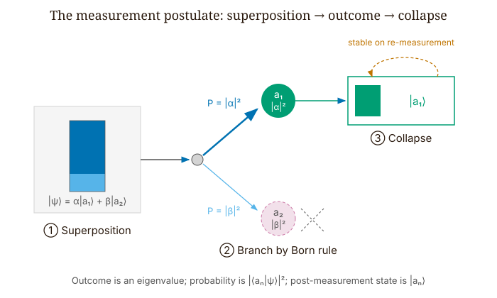
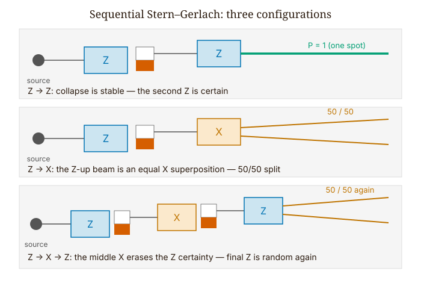
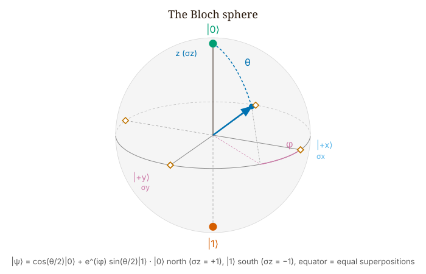
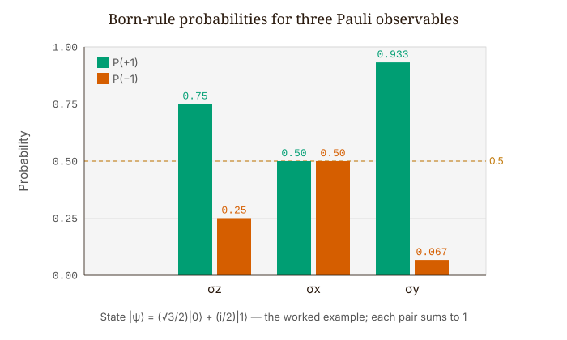

Quantum Mechanics · Volume 1
Chapter 9 — Measurement, Superposition, and the Qubit
Every chapter so far has followed a quantum state as it evolves: the Schrödinger equation takes a wave function and grinds it forward in time, smoothly and deterministically. But that is not what we actually see in a laboratory. What we see is the result of a measurement — a single number on a dial, a single dot on a screen — and the wave function does not, by itself, tell us which number we will get. Back in Chapter 3 we flagged that the everyday words detect and measure conceal real subtleties, and promised to return to them; this is that chapter. We will state the rules that govern measurement outcomes precisely, apply them to the simplest quantum system there is — the two-level system, or qubit — and look carefully at what the formalism does, and does not, say about what happens to a system when it is measured.
9.1 The Measurement Postulate
Let \(\hat{A}\) be a Hermitian observable — Hermitian, in the sense developed in Chapter 7, so its eigenvalues are real and can serve as measurement outcomes — with discrete eigenvalues \(\{a_n\}\) and orthonormal eigenstates \(\{|a_n\rangle\}\). When we measure \(\hat{A}\) on a system in state \(|\psi\rangle\), three things happen:
1. The only possible outcomes are the eigenvalues \(a_n\). Nothing in between them, no superposition of them — exactly one.
2. The probability of getting \(a_n\) is
\[\boxed{P(a_n) = |\langle a_n|\psi\rangle|^2.} \tag{9.1}\]
This is the Born rule — the same rule that gave probability densities for a particle’s position in Chapter 3, now applied to a discrete set of outcomes. The inner product \(\langle a_n|\psi\rangle\) measures how much the state \(|\psi\rangle\) overlaps the eigenstate \(|a_n\rangle\); it is a complex amplitude, and its modulus squared is the probability. Geometrically, \(P(a_n)\) is the squared projection of \(|\psi\rangle\) onto \(|a_n\rangle\).
3. Immediately after the measurement returns \(a_n\), the state is \(|a_n\rangle\).
This abrupt change of state is called collapse (or state reduction), and it is worth pausing on, because it is unlike anything in the earlier chapters. Between measurements the wave function evolves smoothly and reversibly under the Schrödinger equation; a measurement does something altogether different, discontinuously replacing the entire superposition \(|\psi\rangle\) with the single eigenstate \(|a_n\rangle\) that was actually found. Every component that did not occur is simply dropped from the description. Collapse is not a figure of speech or a vague notion that ‘the particle decides’ — it is a precise rule for updating the state, and it is exactly what lets us predict any measurement that comes after the first.
The probabilities sum to 1 by the completeness of the eigenstates:
\[\sum_n P(a_n) = \sum_n |\langle a_n|\psi\rangle|^2 = \langle\psi|\!\left(\sum_n |a_n\rangle\langle a_n|\right)\!|\psi\rangle = \langle\psi|\hat{I}|\psi\rangle = 1. \tag{9.2}\]
The bracketed sum \(\sum_n |a_n\rangle\langle a_n|\) is the completeness relation: the eigenstates of a Hermitian observable form a complete basis, so adding up their projectors rebuilds the identity \(\hat{I}\), and the probabilities total exactly 1. Nothing leaks: every measurement is certain to return one of the eigenvalues \(a_n\) and never any value outside that set, with no missing or leftover probability. What collapse means — whether the state’s sudden jump is a real physical process, merely an update of the observer’s information, or something else again — is genuinely unsettled, and the major interpretations of quantum mechanics answer it differently. That open question does not touch the predictions, however: whatever collapse ultimately is, once the outcome \(a_n\) has been obtained we compute every later measurement from the state \(|a_n\rangle\).

9.2 The Qubit: a Two-State System
The simplest system in which all of this is computable by hand is the qubit, whose states live in a two-dimensional complex vector space — a Hilbert space — written \(\mathbb{C}^2\): every state is just a pair of complex numbers. We choose a basis \(\{|0\rangle, |1\rangle\}\). The most general normalized state is
\[|\psi\rangle = \alpha|0\rangle + \beta|1\rangle, \qquad \alpha, \beta \in \mathbb{C}, \qquad |\alpha|^2 + |\beta|^2 = 1. \tag{9.3}\]
Two real parameters specify the state, up to a global phase. An electron’s spin, a photon’s polarization, the two lowest energy levels of a superconducting circuit — all are physical qubits, and the mathematics is identical for all of them.
The standard observables on a qubit are the Pauli operators:
\[\sigma_x = \begin{pmatrix}0 & 1\\1 & 0\end{pmatrix}, \qquad \sigma_y = \begin{pmatrix}0 & -i\\i & 0\end{pmatrix}, \qquad \sigma_z = \begin{pmatrix}1 & 0\\0 & -1\end{pmatrix}. \tag{9.4}\]
Each is Hermitian, each squares to the identity, and each has eigenvalues \(\pm 1\). Their commutators are \([\sigma_i, \sigma_j] = 2i\epsilon_{ijk}\sigma_k\), so for example \([\sigma_x, \sigma_z] = -2i\sigma_y \neq 0\). They do not commute, which means measuring one after another in different orders gives different results.
A word of caution about \(\sigma_y\): the upper-right entry is \(-i\), not \(+i\). This is the single most common sign error in qubit calculations. The matrix is Hermitian even though it looks antisymmetric as a real matrix, because Hermitian means equal to the conjugate transpose. The transpose of \(\sigma_y\) is \(-\sigma_y\), but the conjugate transpose is \(+\sigma_y\), and the \(i\) is what makes that work.
9.3 The Stern-Gerlach Experiment
In 1922, Otto Stern and Walther Gerlach passed silver atoms through an inhomogeneous magnetic field. Classical physics predicted a smear — a continuous spread of deflections matching the continuous range of magnetic-moment orientations. What they saw instead was two discrete spots.
The field gradient exerts a force proportional to \(\mu_z\), the component of the magnetic moment along the field axis. If angular momentum were classical, \(\mu_z\) would be continuous and the deposit on the plate would be a streak. Instead there were two spots, at \(\mu_z = \pm\mu_B\). The Born rule is not abstract here. It is written in silver.
The observable is \(\hat{S}_z = (\hbar/2)\sigma_z\), with eigenvalues \(\pm\hbar/2\). An atom in state \(|\psi\rangle = \alpha|\!\uparrow\rangle + \beta|\!\downarrow\rangle\) hits the upper spot with probability \(|\alpha|^2\) and the lower with \(|\beta|^2\). If we let only the upper beam through, the remaining atoms are in state \(|\!\uparrow\rangle\) — collapsed, certain, ready to be used again.
The interesting physics shows up in sequences. Consider three arrangements:
Z then Z. Select the \(|\!\uparrow\rangle\) beam from a first Z apparatus and feed it into a second. Every atom hits the upper spot, with probability 1. Once we know the outcome of a \(\hat{S}_z\) measurement, measuring \(\hat{S}_z\) again gives the same result — collapse is stable.
Z then X. The \(\hat{S}_x\) eigenstates are \(|\pm x\rangle = (|\!\uparrow\rangle \pm |\!\downarrow\rangle)/\sqrt{2}\). An atom in \(|\!\uparrow\rangle\) is an equal superposition of both \(\hat{S}_x\) eigenstates, so a subsequent X measurement comes out 50/50. The atom that was certainly spin-up in Z is completely uncertain in X.
Z then X then Z. After the X measurement, the state collapses to \(|+x\rangle\) or \(|-x\rangle\). Either way, that state is a 50/50 superposition in Z, since \(|+x\rangle = (|\!\uparrow\rangle + |\!\downarrow\rangle)/\sqrt{2}\). The final Z measurement is again random. The intermediate X measurement erased the Z information. Measure Z, then X, then Z, and the Z certainty is gone.
This is not instrumental imprecision. It is \([\sigma_x, \sigma_z] \neq 0\) made physically tangible. We cannot hold definite values for both observables at once.

9.4 The Bloch Sphere
Every normalized qubit state, up to a global phase, can be written as
\[|\psi\rangle = \cos\!\left(\frac{\theta}{2}\right)|0\rangle + e^{i\phi}\sin\!\left(\frac{\theta}{2}\right)|1\rangle, \qquad \theta \in [0, \pi], \quad \phi \in [0, 2\pi). \tag{9.5}\]
The factor \(\theta/2\) — not \(\theta\) — is required. We can check it: at \(\theta = 0\) we get \(|0\rangle\); at \(\theta = \pi\) we get \(e^{i\phi}|1\rangle\), which is \(|1\rangle\) up to a global phase; and at \(\theta = \pi/2\) we get the equatorial state \((|0\rangle + e^{i\phi}|1\rangle)/\sqrt{2}\). Use \(\theta\) instead of \(\theta/2\) and the south pole appears at \(\theta = \pi/2\) rather than \(\theta = \pi\), throwing everything off.
Each state corresponds to a point on the unit sphere through its Bloch vector:
\[\vec{r} = \bigl(\langle\sigma_x\rangle,\, \langle\sigma_y\rangle,\, \langle\sigma_z\rangle\bigr) = (\sin\theta\cos\phi,\, \sin\theta\sin\phi,\, \cos\theta). \tag{9.6}\]
North pole (\(\theta = 0\)): state \(|0\rangle\), \(\langle\sigma_z\rangle = +1\). South pole (\(\theta = \pi\)): state \(|1\rangle\), \(\langle\sigma_z\rangle = -1\). Equator (\(\theta = \pi/2\)): equal superpositions, \(\langle\sigma_z\rangle = 0\). The azimuthal angle \(\phi\) is the relative phase between \(|0\rangle\) and \(|1\rangle\), and it is physically real: different values of \(\phi\) at the same \(\theta\) give different \(\langle\sigma_x\rangle\) and \(\langle\sigma_y\rangle\), detectable by the right measurement. The global phase is unobservable; the relative phase is not.
For pure states, \(|\vec{r}|^2 = 1\) exactly — every pure qubit state lies precisely on the surface of the sphere, never inside it.
The factor \(\theta/2\) in the state produces \(\theta\) on the sphere through double-angle identities. It also means that a full \(2\pi\) rotation of the Bloch vector corresponds to only a half turn of the state vector: after one complete physical rotation the state comes back multiplied by \(-1\), a phase invisible in expectation values but visible in interference, and only a \(4\pi\) rotation restores the state exactly. Neutron interferometry has measured it.

9.5 Worked Example — Predicting Measurement Statistics
Let
\[|\psi\rangle = \frac{\sqrt{3}}{2}|0\rangle + \frac{i}{2}|1\rangle. \tag{9.7}\]
Check normalization: \(3/4 + 1/4 = 1\). In the Bloch parametrization: \(\cos(\theta/2) = \sqrt{3}/2\) gives \(\theta = \pi/3\); the coefficient of \(|1\rangle\) is \(i/2 = e^{i\pi/2}/2\), so \(\phi = \pi/2\).
Measuring \(\sigma_z\).
\[P(\sigma_z = +1) = |\langle 0|\psi\rangle|^2 = 3/4, \qquad P(\sigma_z = -1) = |\langle 1|\psi\rangle|^2 = 1/4. \tag{9.8}\]
Expectation value: \(\langle\sigma_z\rangle = (+1)(3/4) + (-1)(1/4) = 1/2\). From the Bloch vector: \(\langle\sigma_z\rangle = \cos\theta = \cos(\pi/3) = 1/2\). Consistent. Variance: \((\Delta\sigma_z)^2 = 1 - (1/2)^2 = 3/4\).
Post-measurement states: if \(+1\), collapse to \(|0\rangle\); subsequent \(\sigma_z\) gives \(+1\) with probability 1. If \(-1\), collapse to \(|1\rangle\); subsequent \(\sigma_z\) gives \(-1\) with probability 1.
Measuring \(\sigma_x\).
The \(\sigma_x\) eigenstates are \(|\pm x\rangle = (|0\rangle \pm |1\rangle)/\sqrt{2}\).
\[P(\sigma_x = +1) = |\langle +x|\psi\rangle|^2 = \left|\frac{1}{\sqrt{2}}\cdot\frac{\sqrt{3}}{2} + \frac{1}{\sqrt{2}}\cdot\frac{i}{2}\right|^2 = \frac{3+1}{8} = \frac{1}{2}. \tag{9.9}\]
So \(\langle\sigma_x\rangle = 0\). From the Bloch vector: \(\sin\theta\cos\phi = \sin(\pi/3)\cos(\pi/2) = 0\). Consistent.
Measuring \(\sigma_y\).
The \(\sigma_y\) eigenstates are \(|{\pm}y\rangle = (|0\rangle \pm i|1\rangle)/\sqrt{2}\).
\[P(\sigma_y = +1) = \left|\frac{1}{\sqrt{2}}\cdot\frac{\sqrt{3}}{2} + \frac{-i}{\sqrt{2}}\cdot\frac{i}{2}\right|^2 = \left|\frac{\sqrt{3}/2 + 1/2}{\sqrt{2}}\right|^2 = \frac{(\sqrt{3}+1)^2}{8} = \frac{2+\sqrt{3}}{4} \approx 0.933. \tag{9.10}\]
So \(\langle\sigma_y\rangle \approx 0.933 - 0.067 = \sqrt{3}/2\). Bloch vector: \(\sin(\pi/3)\sin(\pi/2) = \sqrt{3}/2\). Consistent.
The Robertson bound.
The Robertson inequality from Chapter 7, \(\sigma_A\sigma_B \geq \tfrac{1}{2}|\langle[\hat{A},\hat{B}]\rangle|\), applies unchanged to these finite-dimensional operators. (To avoid stacking the symbol \(\sigma\) on itself, we write the standard deviation of a Pauli observable such as \(\sigma_x\) as \(\Delta\sigma_x\), rather than \(\sigma_{\sigma_x}\).) Here \([\sigma_x, \sigma_z] = -2i\sigma_y\), so the bound on \(\Delta\sigma_x\,\Delta\sigma_z\) is \(|\langle\sigma_y\rangle| = \sqrt{3}/2\). We computed \(\Delta\sigma_z = \sqrt{3}/2\). For \(\Delta\sigma_x\): \(\langle\sigma_x\rangle = 0\) and \(\sigma_x^2 = \hat{I}\), so \(\Delta\sigma_x = 1\).
Product: \(1 \cdot \sqrt{3}/2 = \sqrt{3}/2\). Bound: \(\sqrt{3}/2\). They are equal — the Robertson bound is saturated. The reason is geometric: this state’s Bloch vector, \((0, \sqrt{3}/2, 1/2)\), lies in the \(y\)–\(z\) plane, and a short calculation shows that for the \((\sigma_x, \sigma_z)\) pair every pure state with \(\langle\sigma_x\rangle = 0\) or \(\langle\sigma_z\rangle = 0\) saturates the bound. (Note the state is not a \(\sigma_y\) eigenstate: \(P(\sigma_y = +1) \approx 0.933\), not 1. The actual \(\sigma_y\) eigenstate, with Bloch vector along the \(y\)-axis itself, is the special case that pushes the product \(\Delta\sigma_x\,\Delta\sigma_z\) to its maximum value 1.)
What changes for a generic state. Pick \(\theta = \pi/4\), \(\phi = 0\). Then \(\langle\sigma_y\rangle = 0\), and the Robertson bound gives \(\Delta\sigma_x\Delta\sigma_z \geq 0\) — trivially satisfied by any non-negative numbers. Computing explicitly: \(\Delta\sigma_x = \Delta\sigma_z = 1/\sqrt{2}\), product \(= 1/2\), bound \(= 0\). The bound holds but is not tight. The Robertson bound is a property of the state, not a fixed number — it tightens or slackens as the state moves around the Bloch sphere.

Looking Ahead
The story continues in Volume 4, with entanglement. Two qubits whose joint state cannot be written as a product of single-qubit states — the Bell states — violate the CHSH inequality and rule out local hidden variables. There the measurement postulate is extended to composite systems, and partial traces and density matrices enter the toolkit.
Interactive Simulations
These companion simulations run in the browser and accompany this chapter online.
- Bloch-sphere explorer — drag θ and φ to read the state, its Bloch vector, and the Born-rule probabilities for σx/σy/σz.
- Measurement & collapse — measure a prepared state to get a random ±1 collapse; many shots build a histogram that converges to the Born probabilities.
- Sequential Stern–Gerlach — chain Z/X/Z analysers and watch the middle X erase the prior Z certainty.
Exercises
Warm-up
-
Difficulty: Warm-up — tests the Born rule and collapse on a qubit. A qubit is in the state \(|\psi\rangle = \tfrac{1}{\sqrt{3}}|0\rangle + \sqrt{\tfrac{2}{3}}\,|1\rangle\). (a) Verify it is normalized. (b) Compute \(P(\sigma_z = +1)\) and \(P(\sigma_z = -1)\) and the expectation value \(\langle\sigma_z\rangle\). © If the measurement returns \(-1\), what is the state immediately afterward, and what does a second \(\sigma_z\) measurement give? Tests: applying \(P(a_n) = |\langle a_n|\psi\rangle|^2\), the expectation value, and the collapse rule.
-
Difficulty: Warm-up — tests the Pauli algebra. For the Pauli matrices: (a) verify \(\sigma_x^2 = \sigma_y^2 = \sigma_z^2 = \hat{I}\) and that each has eigenvalues \(\pm 1\); (b) compute the commutator \([\sigma_x, \sigma_z]\) explicitly and confirm it equals \(-2i\sigma_y\); © explain in one sentence why a nonzero commutator means the order of two measurements matters. Tests: matrix manipulation of the Pauli operators and the meaning of non-commutation.
-
Difficulty: Warm-up — tests eigenstates of \(\sigma_x\) and \(\sigma_y\). (a) Show that \(|\pm x\rangle = (|0\rangle \pm |1\rangle)/\sqrt{2}\) are orthonormal eigenstates of \(\sigma_x\) with eigenvalues \(\pm 1\). (b) Do the same for \(|\pm y\rangle = (|0\rangle \pm i|1\rangle)/\sqrt{2}\) and \(\sigma_y\). © Write \(|0\rangle\) as a superposition of \(|+x\rangle\) and \(|-x\rangle\), and read off the probabilities of a \(\sigma_x\) measurement on a system prepared in \(|0\rangle\). Tests: constructing and verifying Pauli eigenstates and changing basis.
Application
-
Difficulty: Application — tests sequential Stern–Gerlach measurements. A beam is prepared in \(|\!\uparrow\rangle\) (spin-up along \(z\)). (a) It passes through an \(\hat{S}_x\) apparatus; what fraction emerges in each \(\sigma_x\) output? (b) The \(|+x\rangle\) beam is then sent through an \(\hat{S}_z\) apparatus; what are the \(\sigma_z\) output probabilities? © Explain, using the eigenstate expansions, why the intermediate \(x\) measurement has erased the original \(z\) certainty. Tests: tracking collapse and probabilities through a Z→X→Z sequence and interpreting the erasure of information.
-
Difficulty: Application — tests the Bloch-sphere parametrization. A qubit has Bloch angles \(\theta = \pi/3\), \(\phi = \pi/4\). (a) Write the state \(|\psi\rangle\). (b) Compute the Bloch vector \(\vec{r} = (\langle\sigma_x\rangle, \langle\sigma_y\rangle, \langle\sigma_z\rangle)\) and confirm \(|\vec{r}| = 1\). © Which measurement axis would give a definite (probability-1) outcome on this state, and why? Tests: converting between the state, its Bloch angles, and the expectation values, and the geometric meaning of a definite measurement.
-
Difficulty: Application — tests full measurement statistics on a state. For \(|\psi\rangle = \tfrac{1}{2}|0\rangle + \tfrac{\sqrt{3}}{2}|1\rangle\) (real coefficients): (a) compute the probabilities and expectation values for \(\sigma_z\), \(\sigma_x\), and \(\sigma_y\) measurements; (b) locate the state on the Bloch sphere; © which of the three measurements is the most uncertain (closest to 50/50), and how does that show up in the Bloch vector? Tests: carrying the Born rule through all three Pauli measurements and reading the result off the Bloch sphere.
Synthesis
-
Difficulty: Synthesis — tests the Robertson bound on a qubit. Using the Robertson inequality \(\sigma_A\sigma_B \geq \tfrac{1}{2}|\langle[\hat{A},\hat{B}]\rangle|\) with \(\hat{A} = \sigma_x\) and \(\hat{B} = \sigma_z\): (a) show the bound equals \(|\langle\sigma_y\rangle|\). (b) Find the state(s) that saturate it and explain geometrically, in Bloch terms, why those states are special. © Find a state for which the bound is \(0\), verify the inequality still holds, and explain why a zero bound does not mean both observables are simultaneously sharp. Tests: applying Robertson to finite-dimensional operators and interpreting saturation and slack geometrically.
-
Difficulty: Synthesis — tests global versus relative phase. Consider \(|\psi(\phi)\rangle = (|0\rangle + e^{i\phi}|1\rangle)/\sqrt{2}\). (a) Show that an overall global phase on \(|\psi\rangle\) has no effect on any measurement probability. (b) Show that the relative phase \(\phi\) does: compute \(\langle\sigma_x\rangle\) and \(\langle\sigma_y\rangle\) as functions of \(\phi\) and identify which measurements distinguish \(\phi = 0\) from \(\phi = \pi/2\). © Where do these states sit on the Bloch sphere, and what does varying \(\phi\) do geometrically? Tests: the physical distinction between global and relative phase and its Bloch-sphere meaning.
Challenge
- Difficulty: Challenge — tests spin measurement along an arbitrary axis (Malus’s law for spin). Let \(\hat{n} = (\sin\Theta\cos\Phi, \sin\Theta\sin\Phi, \cos\Theta)\) be a unit vector and define the spin observable along it as \(\sigma_n = \hat{n}\cdot\vec{\sigma} = n_x\sigma_x + n_y\sigma_y + n_z\sigma_z\). (a) Show that \(\sigma_n^2 = \hat{I}\), so its eigenvalues are \(\pm 1\). (b) Show that its \(+1\) eigenstate is the Bloch-sphere state pointing along \(\hat{n}\). © A system is prepared in \(|0\rangle\) (spin-up along \(z\)). Show that \(P(\sigma_n = +1) = \cos^2(\Theta/2)\) — the spin analogue of Malus’s law — and check the limits \(\Theta = 0\), \(\pi/2\), and \(\pi\). Tests: building an observable along an arbitrary axis, finding its eigenstates on the Bloch sphere, and deriving the \(\cos^2(\Theta/2)\) projection law.
References
- Dirac, P.A.M. (1930). The Principles of Quantum Mechanics. Oxford University Press.
- Sakurai, J.J. and Napolitano, J. (2021). Modern Quantum Mechanics, 3rd ed. Cambridge University Press. Ch. 1–2.
- Townsend, J.S. (2012). A Modern Approach to Quantum Mechanics, 2nd ed. University Science Books. Ch. 1–3.
- Gerlach, W. and Stern, O. (1922). “Das magnetische Moment des Silberatoms.” Zeitschrift für Physik, 9, 353–355.
- Zurek, W.H. (2003). “Decoherence, einselection, and the quantum origins of the classical.” Reviews of Modern Physics, 75, 715–775.
- Aharonov, Y., Albert, D.Z., and Vaidman, L. (1988). “How the result of a measurement of a component of the spin of a spin-½ particle can turn out to be 100.” Physical Review Letters, 60, 1351.
- Werner, S.A., Colella, R., Overhauser, A.W., and Eagen, C.F. (1975). “Observation of the phase shift of a neutron due to precession in a magnetic field.” Physical Review Letters, 35, 1053.
- Gleason, A.M. (1957). “Measures on the closed subspaces of a Hilbert space.” Journal of Mathematics and Mechanics, 6, 885–893.